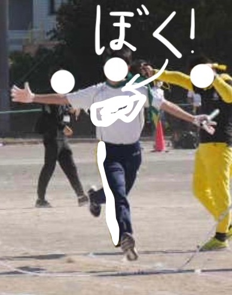

やっと始める！ぼくの日記！
さぁ今日は文化の日だ！
昨日、塾の先生が公民の時に「文化の日は日本国憲法の公布日です！」っていってくれたおかげで、なっかなか覚えられなかった日本国憲法公布日と、（その半年後に施行日があることに気づいたので）施行日も覚えられた。
テストが11月9日にあるというわけなので、これから塾（１時３０分から）いってくる。今日は塾の自習室に籠るつもりだ。
本当は１０時くらいから行くつもりだったが、親がぼくのために過去やったテストの見直しを一緒にしてくれたので、一時に行くことになった。
ぼくはテストをやる時に全く問題を読めてないなぁとしみじみ感じたよ。だから問題文の重要なところに線を引くというめちゃ初歩的な対策をとることにした。こんだけ時間をかけているのだから無駄にしたくない。
というか最近忙しすぎているのか、ストレス溜まってるのか知らんけど、下痢がやばい。あとちょいとした不眠症を発症している。とにかく体調が悪い。そもそもこの時期に勉強以外のことをしているから悪いのだ。ただやめられねぇな。だってぼく一つのことばっかやってると寝込んじゃった経験あるもん。
まぁとりあえず今日はこんなところかなぁそろそろ塾行かないとやばいので行ってきます。
まだ文章があほみたいに意味のないものだけど、これからどんどん成長していきたいなぁと思っています！（最後だけ謎の敬語w国語できない人の典型例になっちゃってめちゃかなC超えてかなD）
運動会で潔く最下位をとるアンカー（僕）
